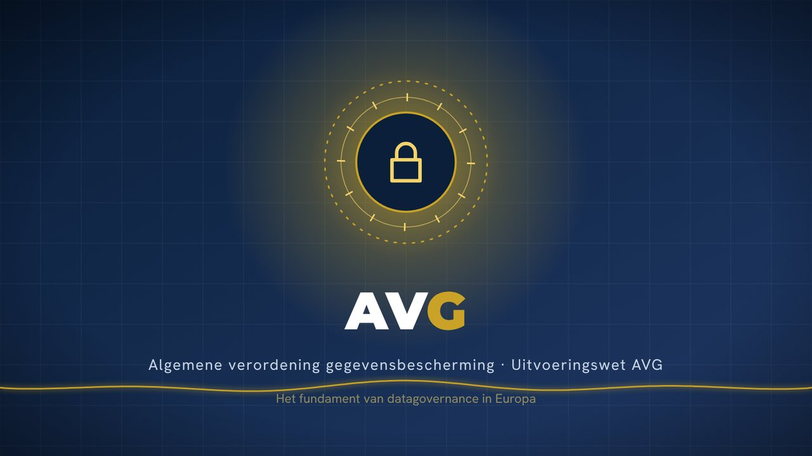

ARG
ARGARGOS › Regelgeving in 4 minuten › AVG
AVG in 4 minuten: Er wordt vooral beboet op de basis
De AVG is het fundament van alle datagovernance in Europa. Zeggen dat je voldoet is niet genoeg. Je moet het kunnen aantonen. Er wordt vooral beboet op de basis.

- 0:00Kleine fouten
- 0:11De boetes
- 0:29Wat beboet wordt
- 0:46AVG
- 0:55Wat ze vraagt
- 1:18Digitale Omnibus
- 1:41Data
- 2:05De keten
- 2:22Nationaal
- 2:40Wat te doen
Kerngegevens
- 20 mln. € of 4 % van de wereldwijde omzet
- 25.5.2018 de AVG is van toepassing
- 1.1.2026 procedureverordening (EU) 2025/2518 in werking
- 2.4.2027 geldt voor nieuwe grensoverschrijdende zaken
- Eind 2027 vereenvoudiging afgerond
- Geen grondslag Verwerking zonder duidelijke basis
- Onjuist register Klopt niet met de werkelijkheid
- Bewaartermijn Gegevens te lang bewaard
Transcriptie
Volledige tekst van de voice-over
0:00 · Kleine fouten
Een e-mail naar de verkeerde ontvanger. Een back-up die niemand wiste. Gegevens buiten Europa. Ogenschijnlijk onschuldig. Tot de klacht komt.
0:11 · De boetes
De Algemene verordening gegevensbescherming geldt sinds 2018, met boetes tot twintig miljoen euro of vier procent van de wereldwijde omzet. In Nederland vult de Uitvoeringswet AVG haar aan. En de Autoriteit Persoonsgegevens is de enige toezichthouder.
0:29 · Wat beboet wordt
Er wordt vooral beboet op de basis. Verwerkingen zonder duidelijke grondslag. Een register dat niet klopt met de werkelijkheid. Gegevens die te lang bewaard worden. Verwerkers zonder controle. En beveiliging die alleen op papier bestaat.
0:46 · AVG
De AVG is het fundament van alle datagovernance in Europa. Zeggen dat je voldoet is niet genoeg. Je moet het kunnen aantonen.
0:55 · Wat ze vraagt
Wat ze vandaag vraagt. Een grondslag en transparantie voor elke verwerking. Een register en, bij hoog risico, een DPIA. Privacy by design, en een overeenkomst met elke verwerker. En datalekken melden binnen 72 uur. Doorgiften buiten de EER, altijd met waarborgen.
1:18 · Digitale Omnibus
En wat er komt: de Digitale Omnibus, nog in onderhandeling. Die zou het begrip persoonsgegeven raken, maar de Raad remt. Die zou gerechtvaardigd belang voor AI erkennen. En alleen datalekken met hoog risico zouden gemeld worden, binnen 96 uur. Maar het is geen wet: vandaag geldt de AVG zoals ze is.
1:41 · Data
De belangrijke data. 25 mei 2018: de AVG is van toepassing. 1 januari 2026: de nieuwe procedureverordening treedt in werking. 2 april 2027: ze geldt voor nieuwe grensoverschrijdende zaken. En eind 2027: de vereenvoudiging afgerond.
2:05 · De keten
Elke schakel heeft zijn rol. De fabrikant: privacy by design. De groothandel: contracten voor support. De integrator: maatregelen en subverwerkers. En de eindklant: grondslagen, register en DPIA's.
2:22 · Nationaal
In Nederland houdt de Autoriteit Persoonsgegevens toezicht, als enige toezichthouder. Ze beboet vooral doorgiften en grootschalige verwerkingen. Sinds 2023 coördineert ze ook het toezicht op algoritmes. En bij de Data Act blijft ze bevoegd voor persoonsgegevens.
2:40 · Wat te doen
Wat nu te doen. Voldoen aan de huidige AVG, datalekken beheersen en AI-training beveiligen. ARGOS toont het aan, in plaats van het te beweren: een echt register, DPIA's en bewijs per maatregel. AVG: voldoen is het kunnen aantonen.
Veelgestelde vragen
Wat is AVG?
De AVG is het fundament van alle datagovernance in Europa. Zeggen dat je voldoet is niet genoeg. Je moet het kunnen aantonen. De Algemene verordening gegevensbescherming geldt sinds 2018, met boetes tot twintig miljoen euro of vier procent van de wereldwijde omzet. In Nederland vult de Uitvoeringswet AVG haar aan. En de Autoriteit Persoonsgegevens is de enige toezichthouder.
Wat vraagt AVG?
Wat ze vandaag vraagt. Een grondslag en transparantie voor elke verwerking. Een register en, bij hoog risico, een DPIA. Privacy by design, en een overeenkomst met elke verwerker. En datalekken melden binnen 72 uur. Doorgiften buiten de EER, altijd met waarborgen.
Wat zijn de belangrijke data?
De belangrijke data. 25 mei 2018: de AVG is van toepassing. 1 januari 2026: de nieuwe procedureverordening treedt in werking. 2 april 2027: ze geldt voor nieuwe grensoverschrijdende zaken. En eind 2027: de vereenvoudiging afgerond.
Wat geldt er in Nederland?
Er wordt vooral beboet op de basis. Verwerkingen zonder duidelijke grondslag. Een register dat niet klopt met de werkelijkheid. Gegevens die te lang bewaard worden. Verwerkers zonder controle. En beveiliging die alleen op papier bestaat. In Nederland houdt de Autoriteit Persoonsgegevens toezicht, als enige toezichthouder. Ze beboet vooral doorgiften en grootschalige verwerkingen. Sinds 2023 coördineert ze ook het toezicht op algoritmes. En bij de Data Act blijft ze bevoegd voor persoonsgegevens.
Wat moet een bedrijf nu doen?
Wat nu te doen. Voldoen aan de huidige AVG, datalekken beheersen en AI-training beveiligen. ARGOS toont het aan, in plaats van het te beweren: een echt register, DPIA's en bewijs per maatregel. AVG: voldoen is het kunnen aantonen.
Officiële bronnen
- Verordening (EU) 2016/679 (GDPR) (EUR-Lex)
- Autoriteit Persoonsgegevens
- Regelgevingsfiches van Software in a Box
Ga verder met
 EHDS
EHDSEHDS in 4 minuten: Voor ziekenhuizen en fabrikanten
 AI-verordening
AI-verordeningAI-verordening in 4 minuten: Nederland: een eigen model
 NIS2
NIS2NIS2 in 4 minuten: Nederland: wet zonder overgangstermijn
Stem en muziek gegenereerd met kunstmatige intelligentie (art. 50 AI-verordening). Algemene informatie, geen juridisch advies; stand van zaken november 2026, volgens de regelgevingsfiches van Software in a Box. Videoclips onder licentie van Envato.
Deze presentatie insluiten op een andere website: <iframe src="https://argos.softwareinabox.eu/nl/regelgeving/avg/presentacion/?embed=1" width="960" height="540" allow="autoplay; fullscreen" title="AVG in 4 minuten: Er wordt vooral beboet op de basis"></iframe> met een link naar deze pagina.
Ook beschikbaar in: EspañolDeutschFrançaisFrançais (Belgique)ItalianoNederlands (België)PortuguêsDansk